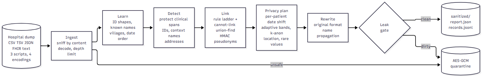

Two passes are needed because a name is often only recognisable once its owner is known: "Shahid sahab" in a
nursing note, शाहिद in a Hindi prescription and Shahid_Mohammad in a file name are found because the
registration row was read first.
NaN/Infinity JSON,
JSON behind .csv, symlinks and special files are quarantined with a reason code, never parsed or unpacked. Every cell, leaf, key, header, file name and note becomes a slot.\u, entities, %-encoding decoded), in
linear time on degenerate text. A protect layer runs first: Dr. names, doses (Dolo 650,
1-0-1), vitals, labs with units, ICD/LOINC codes, eponyms, K/C/O, H/O, C/O <complaint>,
hospital wards, ASHA workers. Then identifiers (Aadhaar, masked Aadhaar, ABHA, every Indian phone format, PAN,
PM-JAY, labelled IDs in English and Hindi), ID shape induction (unseen UHID formats learned from ID columns
and matched with any separator), a multilingual header lexicon with value profiling, context names (labels,
S/o-W/o-C/O, the name before a relation marker, honorifics, Hindi postpositions such as "Irfan ka BP",
chat senders, a capitalised name next to a phone number; any case after a strong cue) and Latin/Devanagari
addresses. Base64/hex runs hiding PII (up to 3 levels deep) are removed whole.PSN- + 8 letters of HMAC-SHA256 keyed from
RAKSHA_SECRET, written into each linked record.| Data set | PII leaked | Canaries | Medical values kept | Link precision / recall | Wrong merges |
|---|---|---|---|---|---|
| Practice (200 files, 48 patients) | 0 / 3,230 | 0 / 4 | 97.7% | 1.00 / 1.00 | 0 |
| Chaos seed 7 (all variants) | 0 / 3,234 | 0 / 8 | 97.7% | 1.00 / 1.00 | 0 |
| Chaos seed 11 (names, headers, IDs) | 0 / 3,230 | 0 / 4 | 97.9% | 1.00 / 1.00 | 0 |
| Adversarial seed 3 | 0 / 3,245 | 0 / 8 | 97.7% | 1.00 / 0.99 | 0 |
| Starter skeleton, for comparison | 84.1% | 4 / 4 | 100% | nothing linked | - |
Each miss these sets exposed (14 leaks on chaos seed 7; tweaked names, encoded PII and a 158 s ReDoS run on the
adversarial set) was fixed at its root, not by adding names. Our re-implementation of the official scoring
(tools/scorecard.py, within 0.3 points of the published passthrough and redact-all baselines) estimates 95.9 / 100.
| Policy (practice registry, our attacker) | Attack risk | Privacy pts (25) | A4 re-id | A5 targeted | Values kept |
|---|---|---|---|---|---|
| Bands, rare diagnoses generalized, district kept | 0.185 | 20.38 | 25.0% | 57.7% | 98.8% |
| + state if (gender, band, district) has < 2 patients | 0.124 | 21.91 | 10.4% | 44.2% | 98.4% |
| + class size raised to 3 (chosen) | 0.101 | 22.46 | 2.1% | 43.0% | 97.7% |
| Same, rare diagnoses kept | 0.116 | 22.10 | 2.1% | 50.2% | 98.9% |
| State for everyone | 0.101 | 22.48 | 2.1% | 43.0% | 96.9% |
Why these settings. On the practice registry, gender + 5-year band + district left 20 of 48 patients unique; adaptive 10/20-year bands leave 5. A truthful DOB would give the birth year and undo the bands, so it is suppressed (DOB is a small part of the utility score). Per-patient shifts defeat global-shift recovery (our attacker recovers 0 days) and keep every interval and stay length exact. We keep the district for most patients because public-health research needs it, and give it up only where the class is rare; "state for everyone" buys nothing more. Eponym diagnoses stay exact: they are scored meaning-trap values. The remaining risk is the targeted attack: a patient whose condition is shared by few people of the same gender and band can still be singled out. Direct exposure (A1) and pseudonym inversion (A6) are 0%; across two releases no pseudonym and 4.3% of dates stay the same (A7).
Speed. Practice data: 2.2 s and 50 MB peak on the Linux CI runner; 10× the practice data (2,000 files): 41 s and 216 MB on a laptop; the 227-file adversarial set: 33 s and 344 MB. Two runs with one secret are byte-identical; another secret changes every pseudonym and date.
RAKSHA_SECRET read once and removed from the environment; separate
HKDF-SHA256 keys for pseudonyms, date shifts, file-name codes and the vault, held only in memory.RAKSHA_VAULT_KEY), input hash as associated data, HMAC blob names..jsonl is treated as text. A text file starting with < is
quarantined as markup even if it is a plain note.